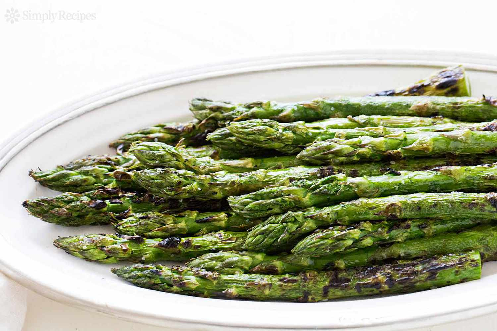

Grilled Asparagus

Description
Grilled asparagus is simple to make, but it lets you enjoy the natural flavor of your veggies. Fresh asparagus spears are coated with a bit of oil, salt, and pepper and cooked quickly over high heat on the grill. That's it!
This recipe will take around 15 minutes and makes 4 servings.
Ingredients
- 1lb Asparagus: Start with a pound of fresh, clean, trimmed asparagus.
- 1 teaspoon Olive Oil: Olive oil keeps the asparagus from drying out and gives the seasonings something to stick to.
- Seasonings: This grilled asparagus is simply seasoned with salt and pepper.
Directions
- preheat outdoor grill and oil the grate
- Lightly coat the asparagus spears with olive oil. Season with salt and pepper to taste.
- Cook asparagus on the preheated grill, turning often until lightly charred and fork-tender about 3 to 5 minutes.